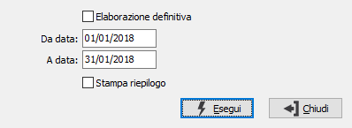
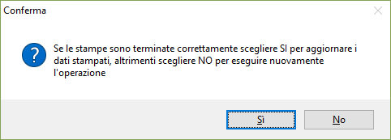

Stampa registro Incassi/Pagamenti semplificata
Il programma effettua la stampa, di prova o definitiva, del registro incassi/pagamenti. La stampa di prova può essere effettuata più volte, mentre la stampa definitiva una sola volta.
E' richiesto il periodo da stampare, come inizio periodo viene proposta automaticamente la data immediatamente successiva a quella dell’ultima stampa definitiva. In caso di stampa definitiva, si consiglia vivamente di non modificare la data proposta automaticamente, per evitare possibili “omissioni”. La casella "Stampa riepilogo" se spuntata aggiunge una stampa riepilogativa dei costi/ricavi in coda ad ogni singolo registro.


Inseriti tutti i parametri, la pressione del bottone Esegui determina l’esecuzione della stampa che è composta di due parti; la prima parte riguarda il registro incassi, al termine viene nuovamente richiesta la stampante e viene eseguita la stampa del registro pagamenti.In caso di stampa definitiva, al termine delle stampe viene visualizzato il messaggio illustrato a lato. Ciò per ovviare all’eventuale, anche se infrequente, evento di rottura di pagine o di mancato avanzamento della carta, soprattutto in caso di stampa tramite stampanti ad aghi.
Se la stampa si è conclusa positivamente, è comunque ovviamente necessario confermare premendo il bottone Si.